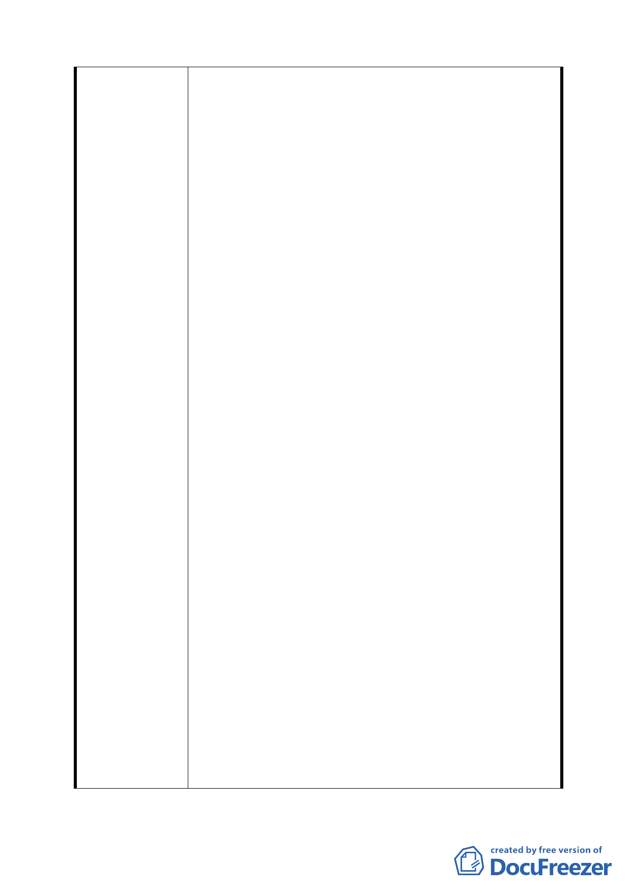

專業考量並與傷殘照顧者照護最高宗旨顯有違背，其
理由如下：
(一)世界衛生組織、聯合國教科文組織、國際勞工組織
曾於 2004 年共同發表關於傷殘者之人權及照護聯合
意見書，文中明確指出傷殘者之復健養護應以「社區
本位」的復健為其宗旨，而「社區本位」之精神在於
身心障礙者應在其本人及其親屬所在社區與當地居
民共同為身心障礙者謀求平等的機會與權利。此一聯
合建議書強調身心障礙者有權選擇自己或親人所處
之社區作為其安身立命之所。準此，社區安置機構應
該廣設於各行政區，讓有安養照護需求者均能於自己
最熟悉之環境中得到最佳的照護。
(二)身心障礙者服務為社會局執掌，理應於本設各社區
廣設各類型社區照顧機構，讓有照顧需求之市民能於
自身最熟悉的環境中與親友及當地居民展開心理
的、社會的、文化的及物理的最佳復健。但社會局不
僅未能體察時勢潮流，為身心障礙者謀最大之福利，
反而因循苟便宜行事之嫌，欲於已有的養護中心現址
對面，重新規劃不符合時代潮流、無視就養者需求，
且為學者長期詬病之集中式安置機構，此舉將嚴重剝
奪身心障礙者之人權，而身心障礙者社區安置之美
意，也將因此淪為「徒有機構外在的形式，只是把一
個人放在社區裡便了事」之憾事，實不為各方所樂見。
二、關懷弱勢的社會責任應平均化，行政區的發展應多
元化：
（一）本區(文山區)於近十多年來已至少設力集中式的
住宿機構三所。
1.財團法人心路社會福利基金會附設臺北市私立
心路社區家園。
2.臺北市政府社會局委託社團法人臺北市康復之
友協會辦理臺北市一壽重殘養護中心。
3.臺北市政府社會局委託財團法人伊甸社會福利
基金會辦理臺北市一壽重殘養護中心。
（二）關懷弱勢應是全體市民的共同責任，本里自十二
-9-